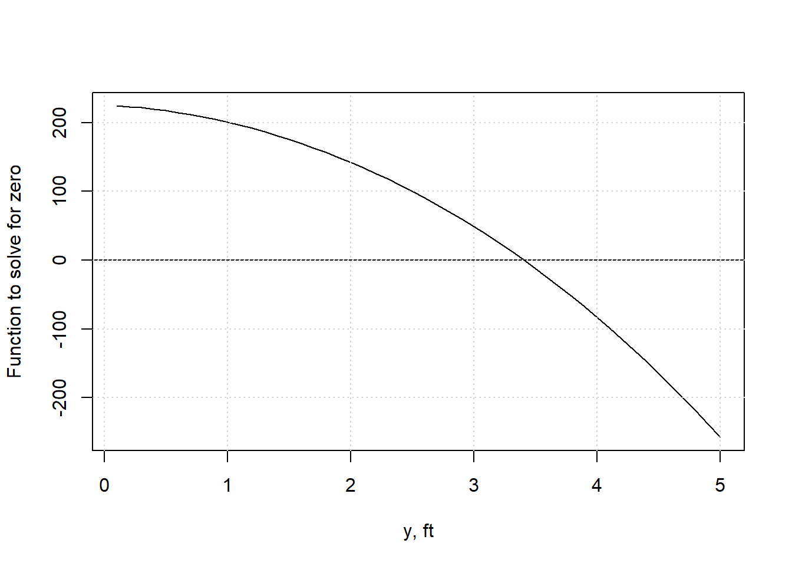
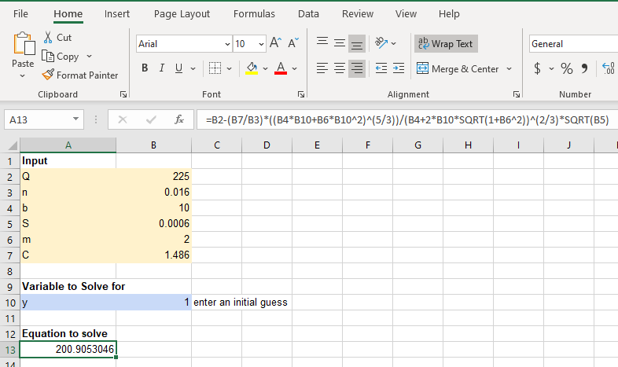

- Preface
- 1 Units in Fluid Mechanics
- 2 Properties of Water
- 3 Water Flowing in Pipes: Energy Losses
- 3.1 Important dimensionless quantity
- 3.2 Friction Loss in Circular Pipes
- 3.3 Solving Pipe friction problems
- 3.4 Solving for head loss (Type 1 problems)
- 3.5 Solving for Flow or Velocity (Type 2 problems)
- 3.6 Solving for pipe diameter, D (Type 3 problems)
- 3.7 Parallel pipes: solving a system of equations
- 3.8 Simple pipe networks: the Hardy-Cross method
- 4 Flow in open channels
- 5 Momentum in water flow
- 6 Pumps and how they operate in a hydraulic system
- References
4.3 Trapezoidal channels
In engineering applications one of the most common channel shapes is trapezoidal.
Figure 4.1: Typical symmetrical trapezoidal cross section
The geometrical relationships for a trapezoid are: \[\begin{equation} A=(b+my)y \tag{4.5} \end{equation}\]
\[\begin{equation} P=b+2y\sqrt{1+m^2} \tag{4.6} \end{equation}\]
Combining Equations (4.5) and (4.6) yields: \[\begin{equation} R=\frac{A}{P}=\frac{\left(b+my\right)y}{b+2y\sqrt{1+m^2}} \tag{4.7} \end{equation}\]
Top width: \(B=b+2\,m\,y\).
Substituting Equations (4.5) and (4.7) into the Manning equation produces Equation (4.8). \[\begin{equation} Q=\frac{C}{n}{\frac{\left(by+my^2\right)^{\frac{5}{3}}}{\left(b+2y\sqrt{1+m^2}\right)^\frac{2}{3}}}{S}^{\frac{1}{2}} \tag{4.8} \end{equation}\]
4.3.1 Solving the Manning equations in R
To solve Equation (4.8) when any variable than Q is unknown, it is straightforward to rearrange it to a form of y(x) = 0. \[\begin{equation} Q-\frac{C}{n}{\frac{\left(by+my^2\right)^{\frac{5}{3}}}{\left(b+2y\sqrt{1+m^2}\right)^\frac{2}{3}}}{S}^{\frac{1}{2}}=0 \tag{4.9} \end{equation}\] This allows the use of a standard solver to find the root(s).
Example 4.1 demonstrates the solution of Equation (4.9) for the flow depth, y. A trial-and-error approach can be applied, and with careful selection of guesses a solution can be obtained relatively quickly. Using solvers makes the process much quicker and less prone to error.
Example 4.1 Find the flow depth, y, for a trapezoidal channel with Q=225 ft3/s, n=0.016, m=2, b=10 ft, S=0.0006.
The Manning equation can be set up as a function in terms of a missing variable, here using normal depth, y as the missing variable.
yfun <- function(y) {
Q - (((y * (b + m * y)) ^ (5 / 3) * sqrt(S)) * (C / n) / ((b + 2 * y * sqrt(1 + m ^ 2)) ^ (2 / 3)))
}Because these use US Customary (or English) units, C=1.486. Define all of the needed input variables for the function.
Q <- 225.
n <- 0.016
m <- 2
b <- 10.0
S <- 0.0006
C <- 1.486Use the R function uniroot to find a single root within a defined interval. Set the interval (the range of possible y values in which to search for a root) to cover all plausible values, here from 0.1 mm to 200 m.
ans <- uniroot(yfun, interval = c(0.0000001, 200), extendInt = "yes")
cat(sprintf("Normal Depth: %.3f ft\n", ans$root))
#> Normal Depth: 3.406 ftFunctions can usually be given multiple values as input, returning the corresponding values of output. this allows plots to be created to show, for example, how the left side of Equation (4.9) varies with different values of depth, y.
ys <- seq(0.1, 5, 0.1)
plot(ys,yfun(ys), type='l', xlab = "y, ft", ylab = "Function to solve for zero")
abline(h=0)
grid()
This validates the result in the example, showing the root of Equation (4.9), when the function has a value of 0, occurs for a depth, y of a little less than 3.5.
4.3.2 Solving the Manning equation with the hydraulics R package
The hydraulics package has a manningt (the ‘t’ is for ‘trapezoid’) function for trapezoidal channels. Example ?? demonstrates its usage. ::: {.example #oc-2} Find the uniform (normal) flow depth, y, for a trapezoidal channel with Q=225 ft3/s, n=0.016, m=2, b=10 ft, S=0.0006. ::: Specifying “Eng” units ensures the correct C value is used. Sf is the same as S in Equations (4.2) and (4.8) since flow is uniform.
ans <- hydraulics::manningt(Q = 225., n = 0.016, m = 2, b = 10., Sf = 0.0006, units = "Eng")
cat(sprintf("Normal Depth: %.3f ft\n", ans$y))
#> Normal Depth: 3.406 ft
#critical depth is also returned, along with other variables.
cat(sprintf("Critical Depth: %.3f ft\n", ans$yc))
#> Critical Depth: 2.154 ft4.3.3 solving the Manning equation using a Spreadsheet Like Excel
Spreadsheet software is very popular and has been modified to be able to accomplish many technical tasks such as solving equations. This example uses Excel with its solver add-in activated, though other spreadsheet software has similar solver add-ins that can be used.
The first step is to enter the input data, for the same example as above, along with an initial guess for the variable you wish to solve for. The equation for which a root will be determined is typed in using the initial guess for y in this case.

At this point you could use a trial-and-error approach and simply try different values for y until the equation produces something close to 0.
A more efficient method is to use a solver. Check that the solver add-in is activated (in Options) and open it. Set the values appropriately.

Click Solve and the y value that produces a zero for the equation will appear.

If you need to solve for multiple roots, you will need to start from different initial guesses.
4.3.4 Optimal trapezoidal geometry
Most fluid mechanics texts that include open channel flow include a derivation of optimal geometry for a trapezoidal channel. This is also called the most efficient cross section. What this means is for a given A and m, there is an optimal flow depth and bottom width for the channel, defined by Equations (eq:topt1) and (eq:topt2).
\[\begin{equation} b_{opt}=2y\left(\sqrt{1+m^2}-m\right) \tag{4.10} \end{equation}\] \[\begin{equation} y_{opt}=\sqrt{\frac{A}{2\sqrt{1+m^2}-m}} \tag{4.11} \end{equation}\]
These may be calculated manually, but they are also returned by the manningt function of the hydraulics package in R. Example 4.2 demonstrates this.
Example 4.2 Find the optimal channel width to transmit 360 ft3/s at a depth of 3 ft with n=0.015, m=1, S=0.0006.
ans <- hydraulics::manningt(Q = 360., n = 0.015, m = 1, y = 3.0, Sf = 0.00088, units = "Eng")
knitr::kable(format(as.data.frame(ans), digits = 2), format = "pipe", padding=0)| Q | V | A | P | R | y | b | m | Sf | B | n | yc | Fr | Re | bopt |
|---|---|---|---|---|---|---|---|---|---|---|---|---|---|---|
| 360 | 5.3 | 68 | 28 | 2.4 | 3 | 20 | 1 | 0.00088 | 26 | 0.015 | 2.1 | 0.57 | 1159705 | 4.8 |
cat(sprintf("Optimal bottom width: %.5f ft\n", ans$bopt))
#> Optimal bottom width: 4.76753 ftThe results show that, aside from the rounding, the required width is approximately 20 ft, and the optimal bottom width for optimal hydraulic efficiency would be 4.76 ft. To check the depth that would be associated with a channel of the optimal width, substitute the optimal width for b and solve for y:
ans <- hydraulics::manningt(Q = 360., n = 0.015, m = 1, b = 4.767534, Sf = 0.00088, units = "Eng")
cat(sprintf("Optimal depth: %.5f ft\n", ans$yopt))
#> Optimal depth: 5.75492 ft